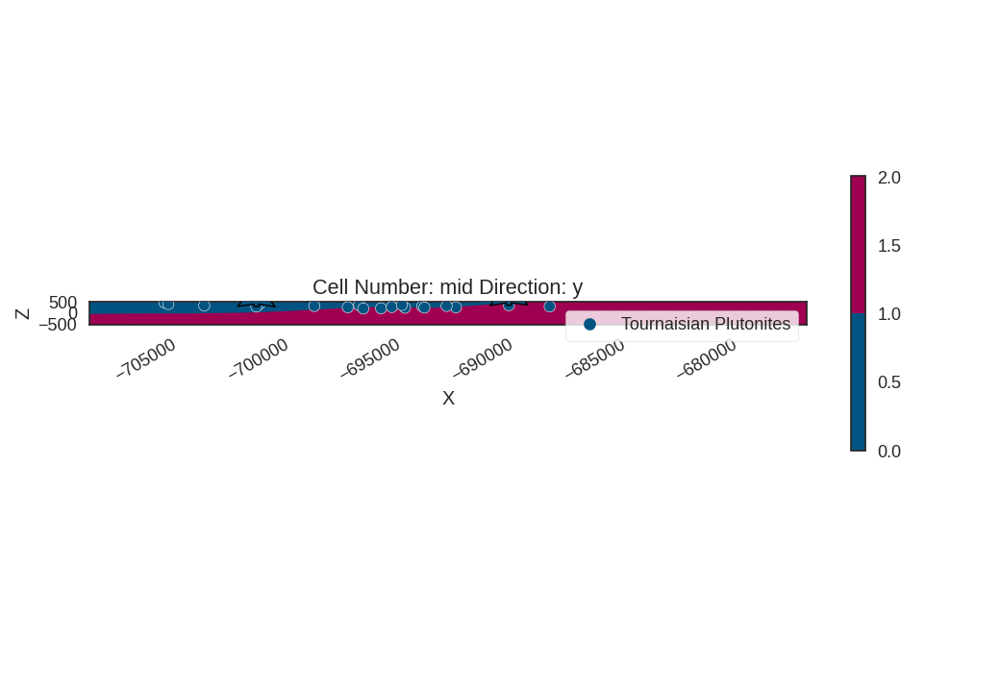
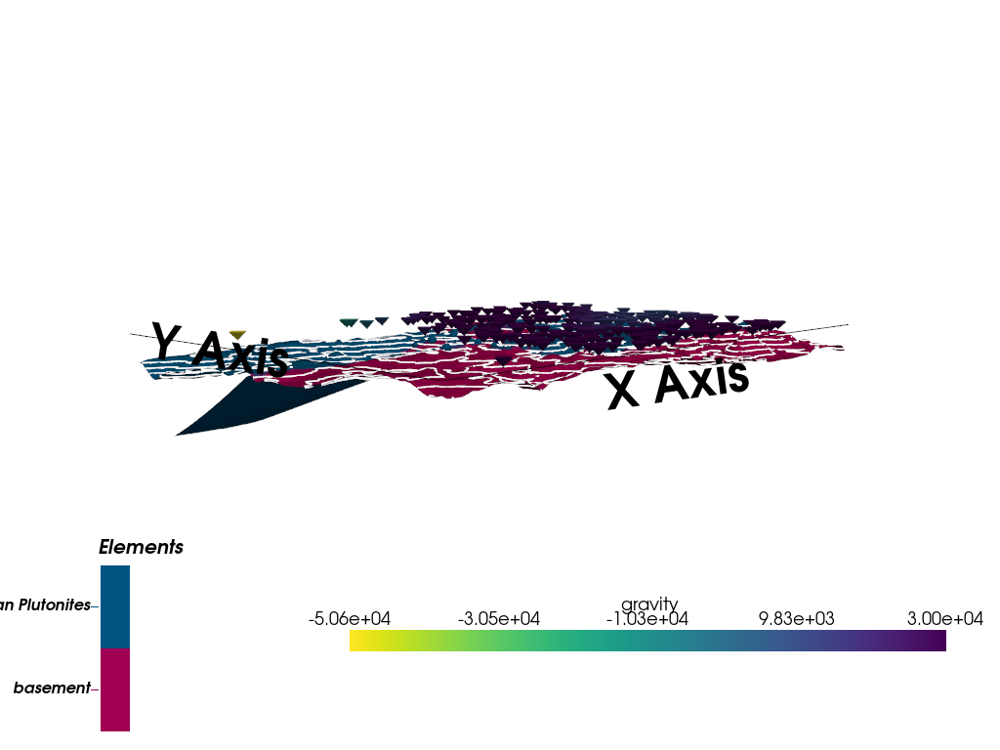
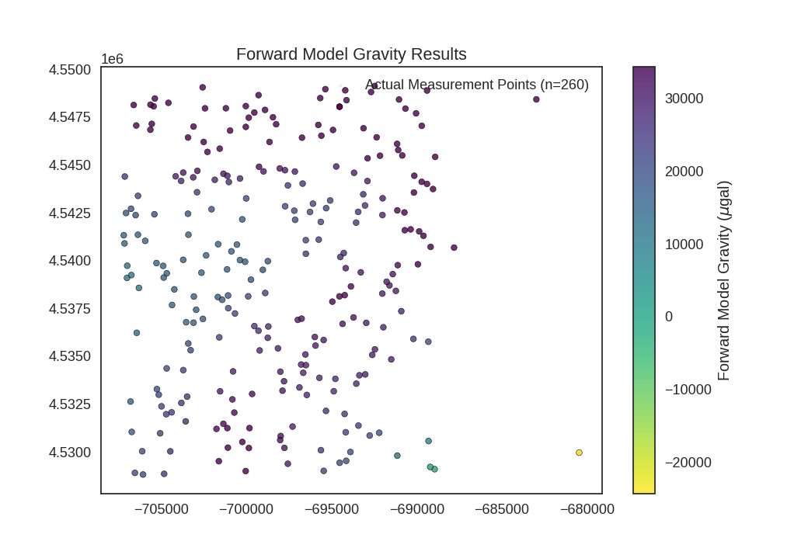
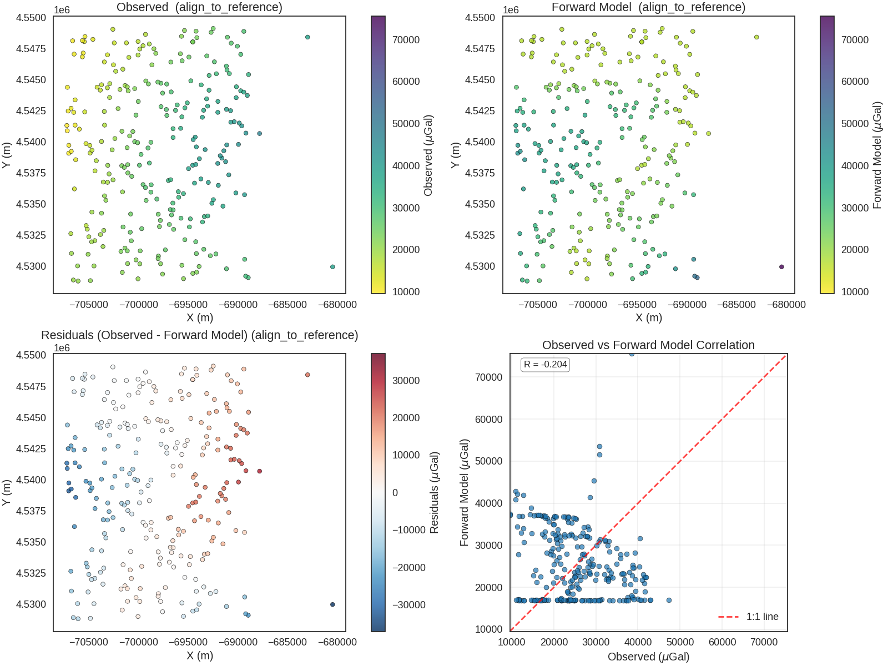
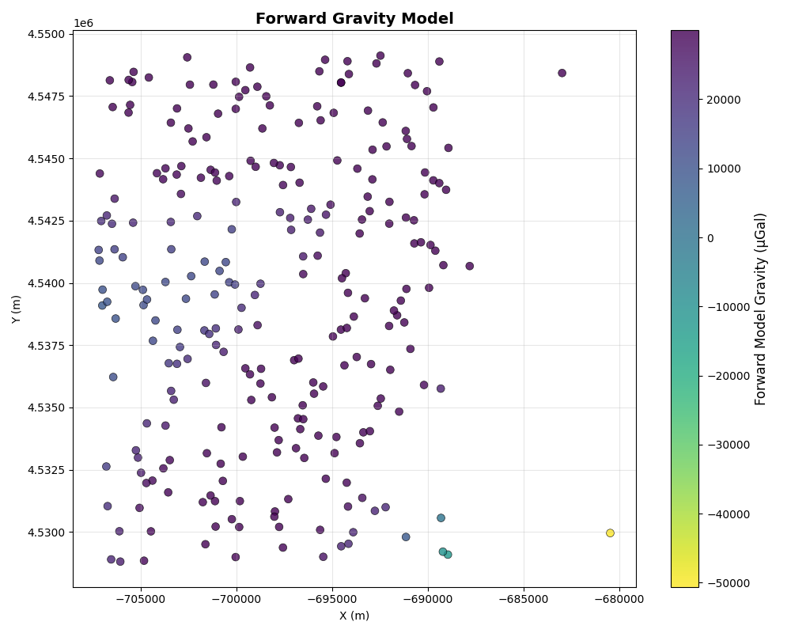
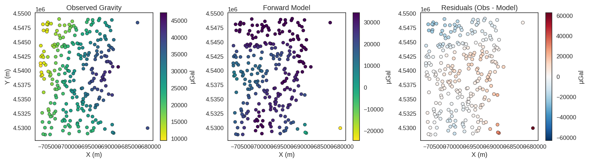
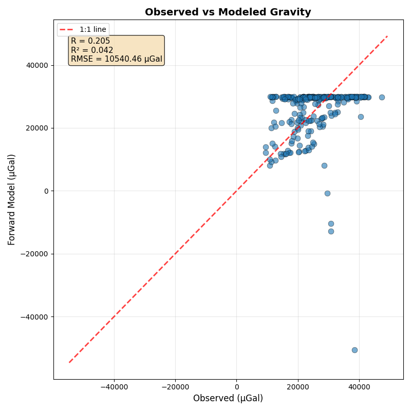

Note
Go to the end to download the full example code.
Forward Gravity Modeling - Tharsis Region¶
This example demonstrates forward gravity modeling using a 3D geological model. We compute the gravity response of the geological structure at real measurement locations.
Overview
Forward gravity modeling predicts the gravitational field anomaly caused by subsurface density contrasts. This is a crucial tool in geophysical exploration for:
Validating geological interpretations against field measurements
Identifying density anomalies associated with ore deposits or intrusions
Constraining geological models before inversion
Understanding the relationship between geology and geophysical signatures
Geophysical Background
Gravity surveys measure tiny variations in Earth’s gravitational field caused by lateral density variations in the subsurface. The gravity anomaly (Δg) at a point depends on:
The density contrast between geological units (Δρ)
The volume and geometry of anomalous bodies
The distance from the observation point to the density anomaly
Typical units:
mGal (milligal) = 10⁻⁵ m/s² = 10⁻³ cm/s²
μGal (microgal) = 10⁻⁸ m/s² = 10⁻⁶ cm/s²
Modern gravimeters can measure to ~10 μGal precision.
The Tharsis Case Study
The Tharsis plutonite intrusion (density ~2.9 g/cm³) intruded into sedimentary host rocks (density ~2.3 g/cm³), creating a positive gravity anomaly. This density contrast of ~0.6 g/cm³ produces a measurable signal that we can model and compare with observations.
Workflow Summary
Create geological model (similar to Example 01)
Load field gravity measurements
Set up computation grids at measurement locations
Assign density values to geological units
Compute forward gravity response
Compare with observations and analyze residuals
Import Libraries¶
Core Libraries:
NumPy: Numerical array operations
PyTorch: Tensor operations with automatic differentiation (useful for inversions)
Matplotlib: Plotting and visualization
Geological Modeling:
GemPy: 3D implicit geological modeling framework
GeoPandas: Geospatial data handling (for loading gravity measurements with coordinates)
Mineye Utilities:
align_forward_to_observed: Aligns modeled gravity to observed data statisticsnormalize: Data normalization and preprocessing functions
import dotenv
dotenv.load_dotenv()
from mineye.GeoModel.helper_plotter import plot_model_and_gravity_sensors
import numpy as np
import torch
from matplotlib import pyplot as plt
import gempy as gp
import geopandas as gpd
from mineye.GeoModel.geophysics import align_forward_to_observed
from mineye.GeoModel.model_one.probabilistic_model import normalize
# Set random seed for reproducibility
np.random.seed(1234)
Setting Backend To: AvailableBackends.PYTORCH
Import paths configuration
from mineye.config import paths
Define Model Extent and Resolution¶
The model covers the Tharsis mining district
min_x = -707_521 # * Cropping the corrupted area of the geotiff
max_x = -675558
min_y = 4526832
max_y = 4551949
max_z = 505
model_depth = -500
extent = [min_x, max_x, min_y, max_y, model_depth, max_z]
# Model resolution: use octree with refinement level 5
resolution = None # Using octrees instead of regular grid
refinement = 5
Get Data Paths¶
Load paths to structural and geophysical data
mod_or_path = paths.get_orientations_path()
mod_pts_path = paths.get_points_path()
gravity_data_path = paths.get_gravity_data_path()
print(f"Orientations: {mod_or_path}")
print(f"Points: {mod_pts_path}")
print(f"Gravity data: {gravity_data_path}")
Orientations: /home/leguark/Projects/gempy_project/Mineye-Terranigma/examples/Data/Model_Input_Data/Simple-Models/orientations_mod.csv
Points: /home/leguark/Projects/gempy_project/Mineye-Terranigma/examples/Data/Model_Input_Data/Simple-Models/points_mod.csv
Gravity data: /home/leguark/Projects/gempy_project/Mineye-Terranigma/examples/Data/General_Input_Data/Geophysical_Cleaned_Data/cleaned_gravity_data.geojson
Create GemPy Geological Model¶
Build the model structure with imported structural data
simple_geo_model = gp.create_geomodel(
project_name='gravity_model',
extent=extent,
refinement=refinement,
resolution=resolution,
importer_helper=gp.data.ImporterHelper(
path_to_orientations=mod_or_path,
path_to_surface_points=mod_pts_path,
)
)
Map Geological Units¶
Define the stratigraphic stack
gp.map_stack_to_surfaces(
gempy_model=simple_geo_model,
mapping_object={
"Tournaisian_Plutonites": ["Tournaisian Plutonites"],
}
)
Load Gravity Observations¶
Read actual gravity measurements from the field
Gravity Survey Data:
Gravity surveys involve systematic measurements of gravitational acceleration across an area of interest. The data typically includes:
Spatial coordinates (X, Y, Z): Location of each measurement station
Bouguer anomaly: Gravity after correcting for latitude, elevation, terrain, and tidal effects
Free-air anomaly: Simpler correction (elevation only)
Measurement metadata: Date, instrument ID, drift corrections, etc.
The Bouguer anomaly (VALU_BOU267) represents the gravity signal attributed purely to
subsurface density variations, making it ideal for geological interpretation.
Data Quality Considerations:
Survey spacing and coverage affect resolution
Measurement precision (typically 10-50 μGal for ground surveys)
Systematic errors from incomplete corrections
Regional trends vs. local anomalies
gravity_data = gpd.read_file(gravity_data_path)
observed_gravity = gravity_data['VALU_BOU267'].values # in mGal
print(f"Number of gravity observations: {len(observed_gravity)}")
print(f"Gravity range: {observed_gravity.min():.2f} to {observed_gravity.max():.2f} mGal")
Number of gravity observations: 260
Gravity range: 9.51 to 47.32 mGal
Set Up Gravity Measurement Locations¶
Create measurement grid at actual device locations
Centered Grid Approach:
For efficient gravity computation, GemPy uses “centered grids” - small 3D volumes around each measurement point. This approach:
Focuses computation only where observations exist (not the entire model volume)
Maintains high resolution near observation points
Significantly reduces computational cost for large numbers of stations
Each measurement location becomes the center of a local grid where the density distribution is evaluated in detail.
Using 260 actual measurement points
Configure Centered Grid for Gravity Computation¶
Set up centered grid around each measurement point
Grid Parameters:
centers: Coordinates of measurement stations
resolution: Number of cells in each direction [X, Y, Z] - [10, 10, 15] creates 10×10×15 = 1,500 cells per station
radius: Extent of local grid in meters [X, Y, Z] - [5000, 5000, 5000] = 5 km radius in all directions
The grid resolution balances accuracy vs. computation time. Higher resolution captures finer details of the density distribution but increases computation cost.
The 1/r² Nature of Gravity
Gravitational attraction follows an inverse-square law:
This means that the contribution of a mass element to the gravity measured at a station decreases rapidly with distance.
Why the Radius Matters in set_centered_grid
The radius parameter in set_centered_grid defines the 3D volume around each station where GemPy will evaluate the density distribution.
Too small radius: Fails to capture the signal from larger or deeper structures, leading to an underestimated or “chopped” gravity response.
Too large radius: Increases computational cost without significantly improving accuracy, as distant cells have negligible influence.
In this example, a 5 km radius ([5000, 5000, 5000]) is chosen to encompass the entire Tharsis plutonite intrusion, ensuring its full gravitational signature is captured.
Active grids: GridTypes.OCTREE|CENTERED|NONE
CenteredGrid(centers=array([[-7.04570250e+05, 4.54824444e+06, 5.00000000e+02],
[-7.04382532e+05, 4.53206604e+06, 5.00000000e+02],
[-6.90136472e+05, 4.54443298e+06, 5.00000000e+02],
[-7.07002148e+05, 4.53909364e+06, 5.00000000e+02],
[-7.04699537e+05, 4.53196859e+06, 5.00000000e+02],
[-7.00950961e+05, 4.54679353e+06, 5.00000000e+02],
[-6.94189651e+05, 4.54889852e+06, 5.00000000e+02],
[-7.04846430e+05, 4.53911004e+06, 5.00000000e+02],
[-7.03528058e+05, 4.53677639e+06, 5.00000000e+02],
[-6.97783816e+05, 4.53369043e+06, 5.00000000e+02],
[-7.00701909e+05, 4.53205343e+06, 5.00000000e+02],
[-6.89387223e+05, 4.54888667e+06, 5.00000000e+02],
[-7.06356826e+05, 4.54338128e+06, 5.00000000e+02],
[-6.99725791e+05, 4.53900142e+06, 5.00000000e+02],
[-7.04880761e+05, 4.53972244e+06, 5.00000000e+02],
[-6.93539735e+05, 4.53356575e+06, 5.00000000e+02],
[-6.89703778e+05, 4.54411549e+06, 5.00000000e+02],
[-6.95657885e+05, 4.54849206e+06, 5.00000000e+02],
[-7.01340437e+05, 4.54453812e+06, 5.00000000e+02],
[-7.03113495e+05, 4.54434831e+06, 5.00000000e+02],
[-6.96260288e+05, 4.54253904e+06, 5.00000000e+02],
[-7.05269751e+05, 4.53986829e+06, 5.00000000e+02],
[-7.02942617e+05, 4.53742719e+06, 5.00000000e+02],
[-7.01668401e+05, 4.53809354e+06, 5.00000000e+02],
[-6.96778079e+05, 4.53456324e+06, 5.00000000e+02],
[-6.90189586e+05, 4.53590404e+06, 5.00000000e+02],
[-6.94278014e+05, 4.54039014e+06, 5.00000000e+02],
[-7.05932225e+05, 4.54103010e+06, 5.00000000e+02],
[-6.94347590e+05, 4.53669093e+06, 5.00000000e+02],
[-6.94530807e+05, 4.53812585e+06, 5.00000000e+02],
[-7.06304300e+05, 4.53856975e+06, 5.00000000e+02],
[-6.99847474e+05, 4.53020227e+06, 5.00000000e+02],
[-7.00873497e+05, 4.54048111e+06, 5.00000000e+02],
[-6.95459414e+05, 4.53584489e+06, 5.00000000e+02],
[-7.07148489e+05, 4.54089640e+06, 5.00000000e+02],
[-6.97998064e+05, 4.53419107e+06, 5.00000000e+02],
[-6.91595188e+05, 4.53870027e+06, 5.00000000e+02],
[-7.06430337e+05, 4.53622273e+06, 5.00000000e+02],
[-6.99279789e+05, 4.54864673e+06, 5.00000000e+02],
[-7.00033658e+05, 4.52899618e+06, 5.00000000e+02],
[-7.05136851e+05, 4.53298811e+06, 5.00000000e+02],
[-7.01343701e+05, 4.53146698e+06, 5.00000000e+02],
[-6.94948029e+05, 4.53785148e+06, 5.00000000e+02],
[-7.02561885e+05, 4.54905334e+06, 5.00000000e+02],
[-6.93552418e+05, 4.54198266e+06, 5.00000000e+02],
[-6.99527196e+05, 4.54773581e+06, 5.00000000e+02],
[-7.01848423e+05, 4.54422076e+06, 5.00000000e+02],
[-7.01110480e+05, 4.54442829e+06, 5.00000000e+02],
[-6.97729207e+05, 4.54472250e+06, 5.00000000e+02],
[-6.97146948e+05, 4.54465158e+06, 5.00000000e+02],
[-7.02279941e+05, 4.54567818e+06, 5.00000000e+02],
[-7.02500434e+05, 4.54619937e+06, 5.00000000e+02],
[-7.01558235e+05, 4.54584715e+06, 5.00000000e+02],
[-7.02871591e+05, 4.54468798e+06, 5.00000000e+02],
[-7.03700811e+05, 4.54459757e+06, 5.00000000e+02],
[-7.04147383e+05, 4.54440278e+06, 5.00000000e+02],
[-7.07131689e+05, 4.54439096e+06, 5.00000000e+02],
[-7.06458744e+05, 4.54705891e+06, 5.00000000e+02],
[-7.05366723e+05, 4.54846972e+06, 5.00000000e+02],
[-7.05436911e+05, 4.54806242e+06, 5.00000000e+02],
[-7.05547079e+05, 4.54714491e+06, 5.00000000e+02],
[-6.92878521e+05, 4.54534566e+06, 5.00000000e+02],
[-6.93672250e+05, 4.54458621e+06, 5.00000000e+02],
[-6.94720653e+05, 4.54491513e+06, 5.00000000e+02],
[-6.90842088e+05, 4.54549207e+06, 5.00000000e+02],
[-6.91144549e+05, 4.54609948e+06, 5.00000000e+02],
[-6.88911827e+05, 4.54541877e+06, 5.00000000e+02],
[-6.92466066e+05, 4.54912199e+06, 5.00000000e+02],
[-6.92675208e+05, 4.54880892e+06, 5.00000000e+02],
[-6.94114991e+05, 4.54838209e+06, 5.00000000e+02],
[-6.90032797e+05, 4.54769453e+06, 5.00000000e+02],
[-6.90656637e+05, 4.54794335e+06, 5.00000000e+02],
[-6.95358046e+05, 4.54895682e+06, 5.00000000e+02],
[-6.93118147e+05, 4.54691561e+06, 5.00000000e+02],
[-6.91034221e+05, 4.54841763e+06, 5.00000000e+02],
[-7.01197862e+05, 4.54795971e+06, 5.00000000e+02],
[-6.95771047e+05, 4.54708854e+06, 5.00000000e+02],
[-6.95592360e+05, 4.54652510e+06, 5.00000000e+02],
[-6.94909127e+05, 4.54682550e+06, 5.00000000e+02],
[-6.94523994e+05, 4.54804049e+06, 5.00000000e+02],
[-6.92347602e+05, 4.54644112e+06, 5.00000000e+02],
[-6.98635862e+05, 4.54619901e+06, 5.00000000e+02],
[-6.99251249e+05, 4.54490114e+06, 5.00000000e+02],
[-7.00027786e+05, 4.54698477e+06, 5.00000000e+02],
[-6.99853919e+05, 4.54746797e+06, 5.00000000e+02],
[-6.98898971e+05, 4.54787341e+06, 5.00000000e+02],
[-6.98433212e+05, 4.54748884e+06, 5.00000000e+02],
[-6.98246166e+05, 4.54712493e+06, 5.00000000e+02],
[-6.98987687e+05, 4.54466052e+06, 5.00000000e+02],
[-6.98034309e+05, 4.54481454e+06, 5.00000000e+02],
[-7.03419465e+05, 4.54643054e+06, 5.00000000e+02],
[-7.03097299e+05, 4.54700280e+06, 5.00000000e+02],
[-7.02423402e+05, 4.54795682e+06, 5.00000000e+02],
[-7.00026697e+05, 4.54807220e+06, 5.00000000e+02],
[-7.03474125e+05, 4.53288773e+06, 5.00000000e+02],
[-7.03810666e+05, 4.53255646e+06, 5.00000000e+02],
[-7.04673247e+05, 4.53436305e+06, 5.00000000e+02],
[-7.03698423e+05, 4.53427360e+06, 5.00000000e+02],
[-7.05245638e+05, 4.53328072e+06, 5.00000000e+02],
[-7.02630887e+05, 4.53936393e+06, 5.00000000e+02],
[-7.03702556e+05, 4.54003708e+06, 5.00000000e+02],
[-7.06361499e+05, 4.54134820e+06, 5.00000000e+02],
[-7.04223671e+05, 4.53849332e+06, 5.00000000e+02],
[-7.04356379e+05, 4.53767727e+06, 5.00000000e+02],
[-7.04665012e+05, 4.53933458e+06, 5.00000000e+02],
[-7.06746112e+05, 4.53924229e+06, 5.00000000e+02],
[-7.07058647e+05, 4.54248477e+06, 5.00000000e+02],
[-7.06766004e+05, 4.54270708e+06, 5.00000000e+02],
[-7.03396645e+05, 4.54135021e+06, 5.00000000e+02],
[-7.06495218e+05, 4.54237312e+06, 5.00000000e+02],
[-7.02357301e+05, 4.54027131e+06, 5.00000000e+02],
[-7.01650512e+05, 4.54085429e+06, 5.00000000e+02],
[-7.02891561e+05, 4.54357107e+06, 5.00000000e+02],
[-7.07191497e+05, 4.54132345e+06, 5.00000000e+02],
[-7.06988196e+05, 4.53972932e+06, 5.00000000e+02],
[-7.02039309e+05, 4.54268183e+06, 5.00000000e+02],
[-7.03405547e+05, 4.53566539e+06, 5.00000000e+02],
[-7.03266909e+05, 4.53531292e+06, 5.00000000e+02],
[-7.00236264e+05, 4.54215213e+06, 5.00000000e+02],
[-7.03098064e+05, 4.53675239e+06, 5.00000000e+02],
[-7.00548764e+05, 4.54083495e+06, 5.00000000e+02],
[-7.01069088e+05, 4.53817433e+06, 5.00000000e+02],
[-7.02545850e+05, 4.53694946e+06, 5.00000000e+02],
[-7.01127016e+05, 4.53953768e+06, 5.00000000e+02],
[-7.01413474e+05, 4.53795171e+06, 5.00000000e+02],
[-7.01057167e+05, 4.53751050e+06, 5.00000000e+02],
[-7.00774764e+05, 4.53420618e+06, 5.00000000e+02],
[-6.99526050e+05, 4.53657202e+06, 5.00000000e+02],
[-6.98705002e+05, 4.53655399e+06, 5.00000000e+02],
[-6.98738611e+05, 4.53596090e+06, 5.00000000e+02],
[-6.98138891e+05, 4.53541035e+06, 5.00000000e+02],
[-7.00814354e+05, 4.53274251e+06, 5.00000000e+02],
[-7.01536976e+05, 4.53316425e+06, 5.00000000e+02],
[-6.95709215e+05, 4.53386932e+06, 5.00000000e+02],
[-6.96976393e+05, 4.53689850e+06, 5.00000000e+02],
[-6.99658441e+05, 4.53302653e+06, 5.00000000e+02],
[-6.96528748e+05, 4.53508901e+06, 5.00000000e+02],
[-6.96655907e+05, 4.53413284e+06, 5.00000000e+02],
[-6.95936549e+05, 4.53555451e+06, 5.00000000e+02],
[-6.94863559e+05, 4.53316759e+06, 5.00000000e+02],
[-6.95976080e+05, 4.53600434e+06, 5.00000000e+02],
[-6.96879191e+05, 4.53336600e+06, 5.00000000e+02],
[-6.96445459e+05, 4.53297440e+06, 5.00000000e+02],
[-6.97873969e+05, 4.53319816e+06, 5.00000000e+02],
[-6.94769803e+05, 4.53381582e+06, 5.00000000e+02],
[-6.94221245e+05, 4.53819111e+06, 5.00000000e+02],
[-6.93857000e+05, 4.53864873e+06, 5.00000000e+02],
[-6.93360409e+05, 4.53400280e+06, 5.00000000e+02],
[-6.93017493e+05, 4.53404887e+06, 5.00000000e+02],
[-6.93705289e+05, 4.53702628e+06, 5.00000000e+02],
[-6.92957109e+05, 4.53674162e+06, 5.00000000e+02],
[-6.91953387e+05, 4.53651263e+06, 5.00000000e+02],
[-6.94163748e+05, 4.53960164e+06, 5.00000000e+02],
[-6.93028813e+05, 4.54287968e+06, 5.00000000e+02],
[-6.93133427e+05, 4.54346203e+06, 5.00000000e+02],
[-6.97132629e+05, 4.54212935e+06, 5.00000000e+02],
[-6.97180785e+05, 4.54260705e+06, 5.00000000e+02],
[-6.97719242e+05, 4.54283803e+06, 5.00000000e+02],
[-6.90694925e+05, 4.54158545e+06, 5.00000000e+02],
[-6.90350442e+05, 4.54163026e+06, 5.00000000e+02],
[-6.89598979e+05, 4.54129335e+06, 5.00000000e+02],
[-6.89177714e+05, 4.54071305e+06, 5.00000000e+02],
[-6.92605683e+05, 4.53506806e+06, 5.00000000e+02],
[-6.92447826e+05, 4.53535993e+06, 5.00000000e+02],
[-6.89925868e+05, 4.53980363e+06, 5.00000000e+02],
[-6.91488423e+05, 4.53483537e+06, 5.00000000e+02],
[-6.91400717e+05, 4.53929017e+06, 5.00000000e+02],
[-6.91219303e+05, 4.53841402e+06, 5.00000000e+02],
[-6.90900320e+05, 4.53735252e+06, 5.00000000e+02],
[-6.91760824e+05, 4.53889234e+06, 5.00000000e+02],
[-6.92013579e+05, 4.53827256e+06, 5.00000000e+02],
[-6.93278788e+05, 4.53938381e+06, 5.00000000e+02],
[-6.91108667e+05, 4.53975920e+06, 5.00000000e+02],
[-6.95312407e+05, 4.54273825e+06, 5.00000000e+02],
[-6.96085901e+05, 4.54297381e+06, 5.00000000e+02],
[-6.96506017e+05, 4.54106574e+06, 5.00000000e+02],
[-6.89036650e+05, 4.54373753e+06, 5.00000000e+02],
[-6.96502841e+05, 4.54035450e+06, 5.00000000e+02],
[-6.91995894e+05, 4.54325403e+06, 5.00000000e+02],
[-6.95746810e+05, 4.54109351e+06, 5.00000000e+02],
[-6.95624725e+05, 4.54201843e+06, 5.00000000e+02],
[-6.92006343e+05, 4.54237855e+06, 5.00000000e+02],
[-6.91133139e+05, 4.54262171e+06, 5.00000000e+02],
[-6.90716496e+05, 4.54251429e+06, 5.00000000e+02],
[-6.95074940e+05, 4.54313969e+06, 5.00000000e+02],
[-6.99027896e+05, 4.53951537e+06, 5.00000000e+02],
[-7.01022098e+05, 4.54410543e+06, 5.00000000e+02],
[-7.00368871e+05, 4.54002472e+06, 5.00000000e+02],
[-7.00069026e+05, 4.53993514e+06, 5.00000000e+02],
[-6.98734314e+05, 4.53996692e+06, 5.00000000e+02],
[-6.97556326e+05, 4.54392817e+06, 5.00000000e+02],
[-6.96691841e+05, 4.54402186e+06, 5.00000000e+02],
[-7.00005633e+05, 4.54324843e+06, 5.00000000e+02],
[-7.05393057e+05, 4.54241772e+06, 5.00000000e+02],
[-7.03824349e+05, 4.54416189e+06, 5.00000000e+02],
[-6.89313757e+05, 4.53575787e+06, 5.00000000e+02],
[-6.89391846e+05, 4.54400568e+06, 5.00000000e+02],
[-6.90158384e+05, 4.54355574e+06, 5.00000000e+02],
[-6.98887192e+05, 4.53830451e+06, 5.00000000e+02],
[-6.99887213e+05, 4.53812986e+06, 5.00000000e+02],
[-7.06792156e+05, 4.53263109e+06, 5.00000000e+02],
[-6.92886936e+05, 4.54415550e+06, 5.00000000e+02],
[-6.92149125e+05, 4.54547872e+06, 5.00000000e+02],
[-6.96750137e+05, 4.53696218e+06, 5.00000000e+02],
[-6.96729668e+05, 4.54642320e+06, 5.00000000e+02],
[-6.80457499e+05, 4.52996092e+06, 5.00000000e+02],
[-7.05624398e+05, 4.54814706e+06, 5.00000000e+02],
[-7.03076852e+05, 4.53811962e+06, 5.00000000e+02],
[-6.92756568e+05, 4.53085230e+06, 5.00000000e+02],
[-6.88941539e+05, 4.52909583e+06, 5.00000000e+02],
[-7.01749402e+05, 4.53120052e+06, 5.00000000e+02],
[-7.05629598e+05, 4.54683619e+06, 5.00000000e+02],
[-7.00662443e+05, 4.53723290e+06, 5.00000000e+02],
[-6.94478080e+05, 4.54018665e+06, 5.00000000e+02],
[-6.89850511e+05, 4.54152314e+06, 5.00000000e+02],
[-6.94523994e+05, 4.54804049e+06, 5.00000000e+02],
[-7.06608130e+05, 4.54813077e+06, 5.00000000e+02],
[-6.91079208e+05, 4.54577696e+06, 5.00000000e+02],
[-7.06061105e+05, 4.52881513e+06, 5.00000000e+02],
[-7.06724221e+05, 4.53104101e+06, 5.00000000e+02],
[-7.04821306e+05, 4.52885057e+06, 5.00000000e+02],
[-7.01080481e+05, 4.53021960e+06, 5.00000000e+02],
[-6.97759999e+05, 4.53020714e+06, 5.00000000e+02],
[-6.97560942e+05, 4.52937808e+06, 5.00000000e+02],
[-6.95454344e+05, 4.52900695e+06, 5.00000000e+02],
[-6.94517920e+05, 4.52943086e+06, 5.00000000e+02],
[-6.93415278e+05, 4.53137302e+06, 5.00000000e+02],
[-6.94228488e+05, 4.53198213e+06, 5.00000000e+02],
[-6.95617778e+05, 4.53008808e+06, 5.00000000e+02],
[-6.94136671e+05, 4.52953148e+06, 5.00000000e+02],
[-6.93887658e+05, 4.52999358e+06, 5.00000000e+02],
[-6.91133796e+05, 4.52980229e+06, 5.00000000e+02],
[-6.94161486e+05, 4.53102414e+06, 5.00000000e+02],
[-6.89202793e+05, 4.52921231e+06, 5.00000000e+02],
[-6.89300434e+05, 4.53056691e+06, 5.00000000e+02],
[-7.01111262e+05, 4.53124209e+06, 5.00000000e+02],
[-7.01611930e+05, 4.52951173e+06, 5.00000000e+02],
[-6.99811930e+05, 4.53124357e+06, 5.00000000e+02],
[-7.00231847e+05, 4.53051682e+06, 5.00000000e+02],
[-7.03557165e+05, 4.53159373e+06, 5.00000000e+02],
[-7.05055274e+05, 4.53097026e+06, 5.00000000e+02],
[-7.06108138e+05, 4.53003321e+06, 5.00000000e+02],
[-7.04459358e+05, 4.53002878e+06, 5.00000000e+02],
[-7.04977759e+05, 4.53237929e+06, 5.00000000e+02],
[-6.95321488e+05, 4.53214056e+06, 5.00000000e+02],
[-6.97282739e+05, 4.53132216e+06, 5.00000000e+02],
[-6.97979602e+05, 4.53082777e+06, 5.00000000e+02],
[-6.92196403e+05, 4.53099830e+06, 5.00000000e+02],
[-7.03422717e+05, 4.54244623e+06, 5.00000000e+02],
[-7.06538457e+05, 4.52890316e+06, 5.00000000e+02],
[-6.99215407e+05, 4.53530158e+06, 5.00000000e+02],
[-6.89698506e+05, 4.54704240e+06, 5.00000000e+02],
[-6.99284130e+05, 4.53633084e+06, 5.00000000e+02],
[-6.96499339e+05, 4.53453115e+06, 5.00000000e+02],
[-6.82972390e+05, 4.54842446e+06, 5.00000000e+02],
[-6.87802644e+05, 4.54067634e+06, 5.00000000e+02],
[-6.93430253e+05, 4.54254364e+06, 5.00000000e+02],
[-7.01585545e+05, 4.53598599e+06, 5.00000000e+02],
[-6.98010147e+05, 4.53061768e+06, 5.00000000e+02],
[-7.00367868e+05, 4.54428712e+06, 5.00000000e+02]]), resolution=array([10, 10, 15]), radius=array([2000, 5000, 2000]), kernel_grid_centers=array([[-2000. , -5000. , -120. ],
[-2000. , -5000. , -144. ],
[-2000. , -5000. , -153.34789186],
...,
[ 2000. , 5000. , -1363.07392302],
[ 2000. , 5000. , -1847.2456152 ],
[ 2000. , 5000. , -2520. ]], shape=(1936, 3)), left_voxel_edges=array([[ 683.77223398, 1709.43058496, -12. ],
[ 683.77223398, 1709.43058496, -12. ],
[ 683.77223398, 1709.43058496, -4.67394593],
...,
[ 683.77223398, 1709.43058496, -174.22571507],
[ 683.77223398, 1709.43058496, -242.08584609],
[ 683.77223398, 1709.43058496, -336.3771924 ]], shape=(1936, 3)), right_voxel_edges=array([[ 683.77223398, 1709.43058496, -12. ],
[ 683.77223398, 1709.43058496, -4.67394593],
[ 683.77223398, 1709.43058496, -6.49442681],
...,
[ 683.77223398, 1709.43058496, -242.08584609],
[ 683.77223398, 1709.43058496, -336.3771924 ],
[ 683.77223398, 1709.43058496, -336.3771924 ]], shape=(1936, 3)))
Calculate Gravity Gradient¶
Compute the gravity gradient (tz component) for the centered grid
Gravity Tensor Components:
The gravity field can be represented as a gradient tensor with 9 components. For vertical gravity (what gravimeters measure), we primarily use:
g_z (or t_z): Vertical component of gravitational acceleration
This is what ground-based gravimeters measure
The gradient calculation determines the geometric contribution of each grid cell to the total gravity at the observation point, based on:
Distance from cell to observation point
Cell volume
Orientation (vertical direction)
These gradients are later multiplied by density values to get the final gravity response.
gravity_gradient = gp.calculate_gravity_gradient(simple_geo_model.grid.centered_grid)
print(f"Gravity gradient tensor shape: {gravity_gradient.shape}")
Gravity gradient tensor shape: (1936,)
Set Density Values¶
Define densities for geological units
Rock Densities:
Density contrasts drive gravity anomalies. Typical rock densities:
Plutonic rocks (granite, diorite): 2.60-2.95 g/cm³
Sedimentary rocks (shale, sandstone): 2.20-2.70 g/cm³
Volcanic rocks (basalt): 2.70-3.10 g/cm³
Ore deposits (massive sulfides): 3.50-5.00 g/cm³
Tharsis Densities:
Tournaisian Plutonites: 2.9 g/cm³ (dense intrusive rocks)
Devonian Sedimentary Host: 2.3 g/cm³ (lower density host rocks)
Density contrast: +0.6 g/cm³ (creates positive gravity anomaly)
These values are based on:
Laboratory measurements of rock samples
Literature values for similar rock types
Calibration with gravity data (in inverse modeling)
Note
Density uncertainties significantly impact modeling results. Typical uncertainties are ±0.05-0.10 g/cm³, which should be considered in probabilistic inversions.
density_plutonites = 2.9 - 2.67 # g/cm³
density_sedimentary_host = 2.3 - 2.67 # g/cm³
simple_geo_model.geophysics_input = gp.data.GeophysicsInput(
tz=gravity_gradient,
densities=np.array([density_plutonites, density_sedimentary_host])
)
print(f"Plutonite density: {density_plutonites} g/cm³")
print(f"Sedimentary host density: {density_sedimentary_host} g/cm³")
print(f"Density contrast: {density_plutonites - density_sedimentary_host:.1f} g/cm³")
Plutonite density: 0.22999999999999998 g/cm³
Sedimentary host density: -0.3700000000000001 g/cm³
Density contrast: 0.6 g/cm³
Compute Forward Gravity Model¶
Run the interpolation and gravity computation
Forward Modeling Process:
Geological interpolation: Determine which geological unit occupies each grid cell
Density assignment: Assign the appropriate density to each cell based on lithology
Gravity summation: Sum the gravitational contribution of all cells using:
\[\begin{split}g_z = G \\sum_{i} \\frac{\\Delta\\rho_i \\cdot V_i \\cdot z_i}{r_i^3}\end{split}\]where:
G = gravitational constant (6.674×10⁻¹¹ m³/(kg·s²))
Δρᵢ = density of cell i
Vᵢ = volume of cell i
zᵢ = vertical distance from cell to observation point
rᵢ = total distance from cell to observation point
Unit conversion: Convert to mGal or μGal
The mesh_extraction=False flag skips 3D mesh generation (not needed for gravity).
simple_geo_model.interpolation_options.mesh_extraction = True
gp.set_topography_from_file(
grid=simple_geo_model.grid,
filepath=paths.get_topography_path(),
crop_to_extent=[
simple_geo_model.grid.extent[0],
simple_geo_model.grid.extent[2],
simple_geo_model.grid.extent[1],
simple_geo_model.grid.extent[3]
]
)
sol = gp.compute_model(simple_geo_model, validate_serialization=False)
print("✓ Forward gravity model computed successfully")
Active grids: GridTypes.OCTREE|TOPOGRAPHY|CENTERED|NONE
Setting Backend To: AvailableBackends.PYTORCH
/home/leguark/.venv/2025/lib/python3.13/site-packages/torch/utils/_device.py:116: UserWarning: Using torch.cross without specifying the dim arg is deprecated.
Please either pass the dim explicitly or simply use torch.linalg.cross.
The default value of dim will change to agree with that of linalg.cross in a future release. (Triggered internally at /pytorch/aten/src/ATen/native/Cross.cpp:63.)
return func(*args, **kwargs)
/home/leguark/.venv/2025/lib/python3.13/site-packages/torch/utils/_device.py:116: UserWarning: To copy construct from a tensor, it is recommended to use sourceTensor.detach().clone() or sourceTensor.detach().clone().requires_grad_(True), rather than torch.tensor(sourceTensor).
return func(*args, **kwargs)
✓ Forward gravity model computed successfully
Extract Gravity Results¶
Get the computed gravity response
Data Alignment:
The align_forward_to_observed function adjusts the forward model to match the
statistical properties of observations. This accounts for:
Regional trends: Long-wavelength variations not captured by the local model
Reference level differences: Arbitrary datums in gravity data
Systematic biases: Uncorrected effects or model simplifications
The normalization uses the align_to_reference method with a 30% extrapolation
buffer to handle edge effects.
Note
This alignment is a practical necessity for forward modeling but should be carefully considered in inverse problems where we’re trying to fit the data.
observed_gravity_ugal = observed_gravity * 1000 # Convert mGal to μGal
norm_params = normalize(
sol.gravity,
observed_gravity_ugal,
method="align_to_reference",
extrapolation_buffer=0.3
)
grav = align_forward_to_observed(sol.gravity, norm_params)
print(f"\nComputed gravity values:")
print(f" Shape: {grav.shape}")
print(f" Range: {grav.min():.2f} to {grav.max():.2f} μGal")
print(f" Mean: {grav.mean():.2f} μGal")
Computing align_to_reference alignment parameters...
Alignment params: {'method': 'align_to_reference', 'reference_mean': 25587.184615384616, 'reference_std': 8369.297471927344, 'baseline_forward_mean': 25.53804167887109, 'baseline_forward_std': 2.90580102793957}
Computed gravity values:
Shape: torch.Size([260])
Range: -24345.14 to 34346.25 μGal
Mean: 25587.18 μGal
Compare with Observations¶
Calculate residuals between observed and computed gravity
Residual Analysis:
Residuals (observed - modeled) reveal how well the geological model explains the data:
Mean residual: Should be close to zero after alignment; systematic bias indicates regional trends or model errors
Standard deviation: Measures scatter; affected by model accuracy and data noise
RMSE (Root Mean Square Error): Overall measure of fit quality
\[\begin{split}RMSE = \\sqrt{\\frac{1}{N} \\sum_{i=1}^{N} (g_{obs,i} - g_{mod,i})^2}\end{split}\]
Interpreting Residuals:
Systematic patterns: Suggest missing geological features or incorrect geometry
Random scatter: Dominated by measurement noise or small-scale geology
Large residuals: May indicate: - Incorrect density values - Unmodeled geological structures - Data quality issues - 3D effects not captured by 2D modeling
Gravity residuals:
Mean: 0.00 μGal
Std: 10551.90 μGal
RMS: 10551.90 μGal
Visualize the Model¶
Create 2D and 3D visualizations of the geological model
Model Visualization:
Before analyzing geophysical results, it’s important to visualize the geological model itself to understand:
Geometry of geological units
Position of observation points relative to the modeled structures
Topographic influences
Overall model plausibility


/home/leguark/Projects/gempy_project/gempy_viewer/gempy_viewer/modules/plot_3d/drawer_topography_3d.py:29: PyVistaFutureWarning: The default value of `algorithm` for the filter
`StructuredGrid.extract_surface` will change in the future. It currently defaults to
`'dataset_surface'`, but will change to `None`. Explicitly set the `algorithm` keyword to
silence this warning.
polydata = grid.extract_surface()
/home/leguark/Projects/gempy_project/gempy_viewer/gempy_viewer/modules/plot_3d/drawer_surfaces_3d.py:38: PyVistaDeprecationWarning:
/home/leguark/Projects/gempy_project/gempy_viewer/gempy_viewer/modules/plot_3d/drawer_surfaces_3d.py:38: Argument 'color' must be passed as a keyword argument to function 'BasePlotter.add_mesh'.
From version 0.50, passing this as a positional argument will result in a TypeError.
gempy_vista.surface_actors[element.name] = gempy_vista.p.add_mesh(
Visualize Gravity Results¶
Plot forward gravity and comparison with observations
Geophysical Data Visualization:
Spatial plots help identify:
Anomaly patterns and their relationship to geology
Data coverage and survey design
Edge effects and boundary artifacts
Correlation between observed and modeled signatures
from mineye.GeoModel.plotting.probabilistic_analysis import plot_fw_geophysics, plot_comparison
plot_fw_geophysics(
fw_values=grav,
observed_data=gravity_data,
xy_ravel=xy_ravel,
label=r'Forward Model Gravity ($\mu$gal)',
title='Forward Model Gravity Results'
)
plot_comparison(observed_gravity, grav, xy_ravel, unit_label=r'$\mu$Gal')


Plotting 260 actual measurement locations
=== Observed vs Predicted Comparison ===
Computing align_to_reference alignment parameters...
Alignment params: {'method': 'align_to_reference', 'reference_mean': 25587.184615384616, 'reference_std': 8369.297471927344, 'baseline_forward_mean': -25587.184615384613, 'baseline_forward_std': 8353.187163491926}
Visualize Forward Model Results¶
Detailed Gravity Map:
This map shows the predicted gravity field from our geological model. Key features to observe:
Positive anomalies: Occur over the dense plutonite intrusion
Negative anomalies: May occur at the edges or over less dense rocks
Spatial trends: Reflect the geometry and extent of density contrasts
Amplitude: Related to the magnitude of density contrast and body volume
The colormap (viridis_r) is reversed so higher values (positive anomalies) appear warmer, following common geophysical convention.
grav_forward = grav
print(f"✓ Forward model computed")
print(f" Gravity range: [{grav_forward.min():.2f}, {grav_forward.max():.2f}] µGal")
fig, ax = plt.subplots(figsize=(10, 8))
scatter = ax.scatter(
xy_ravel[:, 0], xy_ravel[:, 1],
c=grav_forward, s=50,
cmap='viridis_r', alpha=0.8,
edgecolors='black', linewidth=0.5
)
cbar = plt.colorbar(scatter, ax=ax)
cbar.set_label(r'Forward Model Gravity (µGal)', fontsize=12)
ax.set_title('Forward Gravity Model', fontsize=14, fontweight='bold')
ax.set_xlabel('X (m)')
ax.set_ylabel('Y (m)')
ax.grid(True, alpha=0.3)
plt.tight_layout()
plt.show()

✓ Forward model computed
Gravity range: [-24345.14, 34346.25] µGal
Compare with Observed Gravity¶
Three-Panel Comparison:
This comprehensive view shows:
Observed Gravity (Left): - Actual field measurements - Represents the “truth” we’re trying to match - Contains geological signal + noise + regional trends
Forward Model (Center): - Predicted gravity from our geological interpretation - Shows what the model “thinks” the gravity should be - Ideally should match observed patterns
Residuals (Right): - Difference between observed and modeled (Obs - Model) - Red: Model under-predicts (observed > modeled) - Blue: Model over-predicts (observed < modeled) - White/near-zero: Good fit
What to look for:
Systematic patterns in residuals suggest model improvements needed
Random residuals indicate we’re at the noise level
Large residuals in specific areas point to local geological features not captured
# Convert observed from mGal to µGal
observed_ugal = observed_gravity_ugal
# Create comparison plot
fig, axes = plt.subplots(1, 3, figsize=(18, 5))
# Observed
sc1 = axes[0].scatter(
xy_ravel[:, 0], xy_ravel[:, 1],
c=observed_ugal, s=50, cmap='viridis_r',
edgecolors='black', linewidth=0.5
)
axes[0].set_title('Observed Gravity')
axes[0].set_xlabel('X (m)')
axes[0].set_ylabel('Y (m)')
plt.colorbar(sc1, ax=axes[0], label='µGal')
# Forward model
sc2 = axes[1].scatter(
xy_ravel[:, 0], xy_ravel[:, 1],
c=grav_forward, s=50, cmap='viridis_r',
edgecolors='black', linewidth=0.5
)
axes[1].set_title('Forward Model')
axes[1].set_xlabel('X (m)')
plt.colorbar(sc2, ax=axes[1], label='µGal')
# Residuals
# Use a symmetric diverging colormap centered at zero
res_max = np.max(np.abs(residuals))
sc3 = axes[2].scatter(
xy_ravel[:, 0], xy_ravel[:, 1],
c=residuals, s=50, cmap='RdBu_r',
vmin=-res_max, vmax=res_max,
edgecolors='black', linewidth=0.5
)
axes[2].set_title('Residuals (Obs - Model)')
axes[2].set_xlabel('X (m)')
plt.colorbar(sc3, ax=axes[2], label='µGal')
plt.tight_layout()
plt.show()

Correlation Analysis¶
Cross-Plot Analysis:
The scatter plot of observed vs. modeled gravity is a powerful diagnostic tool:
1:1 line (red dashed): Perfect agreement would have all points on this line
Correlation coefficient (R): Measures linear relationship strength (-1 to +1) - R > 0.9: Excellent correlation - R = 0.7-0.9: Good correlation - R < 0.7: Poor correlation
R²: Fraction of variance explained by the model (0 to 1)
RMSE: Average prediction error in µGal
Interpreting the Plot:
Points above the 1:1 line: Model under-predicts
Points below the 1:1 line: Model over-predicts
Scatter around the line: Combination of model error and measurement noise
Systematic deviations: Indicate model bias or missing physics
This analysis helps determine if the geological model is a reasonable representation of the subsurface structure.
fig, ax = plt.subplots(figsize=(8, 8))
ax.scatter(observed_ugal, grav_forward, alpha=0.6, s=60,
edgecolors='black', linewidth=0.5)
# 1:1 line
lims = [
min(ax.get_xlim()[0], ax.get_ylim()[0]),
max(ax.get_xlim()[1], ax.get_ylim()[1])
]
ax.plot(lims, lims, 'r--', alpha=0.75, linewidth=2, label='1:1 line')
# Calculate statistics
correlation = np.corrcoef(observed_ugal, grav_forward)[0, 1]
rmse = np.sqrt(np.mean(residuals ** 2))
ax.set_xlabel('Observed (µGal)', fontsize=12)
ax.set_ylabel('Forward Model (µGal)', fontsize=12)
ax.set_title('Observed vs Modeled Gravity', fontsize=14, fontweight='bold')
ax.grid(True, alpha=0.3)
ax.legend()
# Add statistics text box
textstr = f'R = {correlation:.3f}\nR² = {correlation ** 2:.3f}\nRMSE = {rmse:.2f} µGal'
ax.text(0.05, 0.95, textstr, transform=ax.transAxes,
verticalalignment='top',
bbox=dict(boxstyle='round', facecolor='wheat', alpha=0.8),
fontsize=11)
plt.tight_layout()
plt.show()

Print Summary Statistics¶
print("\n" + "=" * 50)
print("GRAVITY COMPARISON STATISTICS")
print("=" * 50)
print(f"Number of measurements: {len(observed_ugal)}")
print(f"\nObserved gravity:")
print(f" Mean: {observed_ugal.mean():.2f} µGal")
print(f" Std: {observed_ugal.std():.2f} µGal")
print(f" Range: [{observed_ugal.min():.2f}, {observed_ugal.max():.2f}] µGal")
print(f"\nForward model:")
print(f" Mean: {grav_forward.mean():.2f} µGal")
print(f" Std: {grav_forward.std():.2f} µGal")
print(f" Range: [{grav_forward.min():.2f}, {grav_forward.max():.2f}] µGal")
print(f"\nResiduals:")
print(f" Mean: {residuals.mean():.2f} µGal")
print(f" Std: {residuals.std():.2f} µGal")
print(f" RMSE: {rmse:.2f} µGal")
print(f" MAE: {np.abs(residuals).mean():.2f} µGal")
print(f"\nCorrelation: {correlation:.4f} (R² = {correlation ** 2:.4f})")
print("=" * 50)
==================================================
GRAVITY COMPARISON STATISTICS
==================================================
Number of measurements: 260
Observed gravity:
Mean: 25587.18 µGal
Std: 8369.30 µGal
Range: [9508.00, 47323.00] µGal
Forward model:
Mean: 25587.18 µGal
Std: 8353.19 µGal
Range: [-24345.14, 34346.25] µGal
Residuals:
Mean: 0.00 µGal
Std: 10551.90 µGal
RMSE: 10551.90 µGal
MAE: 8095.83 µGal
Correlation: 0.2037 (R² = 0.0415)
==================================================
Summary and Interpretation¶
Model Limitations:
Forward models are simplifications of reality and have inherent limitations:
Density assumptions: We used uniform densities, but real rocks are heterogeneous
Geological simplification: Simple geometry may not capture all structural complexity
Data coverage: Limited measurement points constrain resolution
Regional trends: Long-wavelength features may not be fully captured
3D effects: Some anomalies may be caused by out-of-plane structures
Next Steps and Applications:
This forward modeling foundation enables:
Probabilistic Inversion (Example 04): Use Bayesian methods to infer densities and geological parameters from the gravity data
Uncertainty Quantification: Propagate uncertainties in geology to geophysics
Joint Inversion: Combine gravity with magnetics, seismic, or other data
Model Refinement: Use residuals to iteratively improve geological interpretation
Resource Estimation: Better constrain ore body geometry and properties
Further Reading:
Blakely, R. J. (1996). Potential Theory in Gravity and Magnetic Applications. Cambridge University Press.
Li, Y., & Oldenburg, D. W. (1998). 3-D inversion of gravity data. Geophysics, 63(1), 109-119.
de la Varga et al. (2019). GemPy 1.0: open-source stochastic geological modeling and inversion. Geoscientific Model Development, 12(1), 1-32.
See also
Bayesian Gravity Inversion: Complete Workflow - Bayesian gravity inversion
Bayesian Magnetic Inversion: TMI Inversion Workflow - Joint geophysical inversion
sphinx_gallery_thumbnail_number = 2
Total running time of the script: (0 minutes 18.651 seconds)